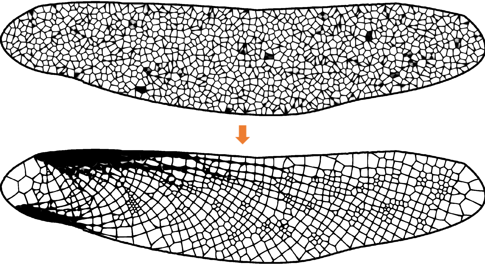
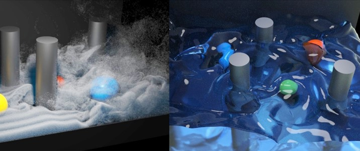

Publications

A Moving Eulerian-Lagrangian Particle Method for Thin Film and Foam Simulation
SIGGRAPH 2022
Yitong Deng, Mengdi Wang, Xiangxin Kong, Shiying Xiong, Zangyueyang Xian, and Bo Zhu
[paper] [webpage] [video]

Thin-Film Smoothed Particle Hydrodynamics Fluid
SIGGRAPH 2021
Mengdi Wang, Yitong Deng, Xiangxin Kong, Aditya Prasad, Shiying Xiong, and Bo Zhu
[paper] [webpage] [video]

Soft Multicopter Control Using Neural Dynamics Identification
CORL 2020
Yitong Deng, Yaorui Zhang, Xingzhe He, Shuqi Yang, Yunjin Tong, Michael Zhang, Daniel DiPietro, and Bo Zhu
[paper] [video] [presentation]